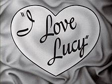
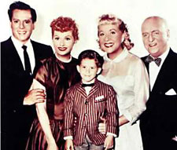

I Love Lucy is an American television sitcom starring Lucille Ball, Desi Arnaz, Vivian Vance, and William Frawley. The black-and-white series originally ran from October 15, 1951, to May 6, 1957, on the Columbia Broadcasting System (CBS). Even after the original series ended in 1957, however, it continued for three more seasons with 13 one-hour specials, running from 1957 to 1960, known first as The Lucille Ball-Desi Arnaz Show and later in reruns as The Lucy-Desi Comedy Hour.
I Love Lucy was the most watched show in the United States in four of its six seasons, and was the first to end its run at the top of the Nielsen ratings (an accomplishment later matched by The Andy Griffith Show and Seinfeld). I Love Lucy is still syndicated in dozens of languages across the world.

The show was the first scripted television program to be shot on 35 mm film in front of a studio audience, and won five Emmy Awards and received numerous nominations. In 2002, it ranked second on TV Guide's list of television's greatest shows, behind Seinfeld and ahead of The Honeymooners. In 2007 it was listed as one of Time magazine's "100 Best TV Shows of All-TIME." I Love Lucy remains hugely popular today; more than 60 years after its debut, it is still seen by 40 million Americans each year.